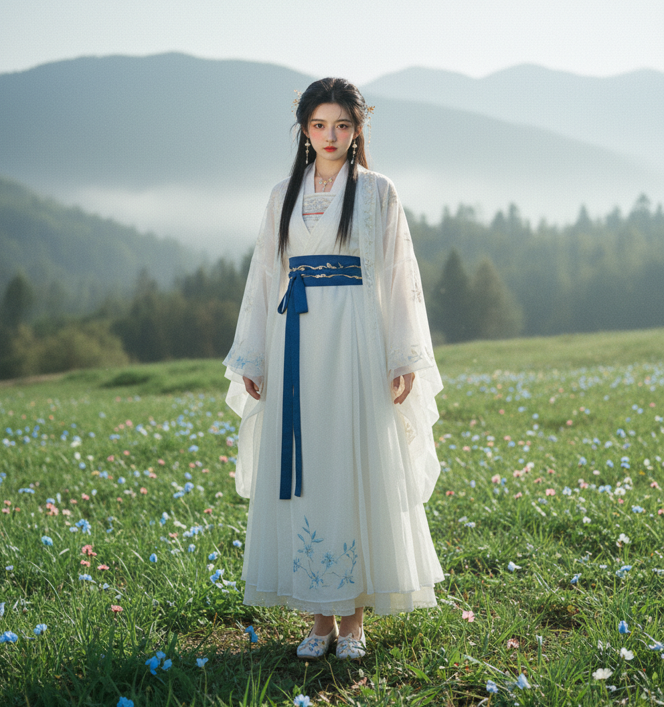

性格定调 · 材质区分 · 视觉图鉴
性格： 冷艳、大胆、充满侵略性的西北野性美。
服化道： **分体式古代形制**。狼毫短衣与皮革围裙。配以**黑色犀皮长靴**，靴筒紧贴腿部，不仅展现健美身姿，更符合大漠作战的职业逻辑。
视觉： 大漠残阳，皮靴破沙，长鞭如电。

性格： 甜美可爱、傲娇少女心，灵动又俏皮。
服化道： **灵动绸缎与系带**。配以**白色缎面绣花布鞋**，鞋底轻薄便于身法，细节处尽显名门师妹的精致与娇憨。
视觉： 孤山雪芽，布鞋轻点，剑意萌动。